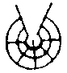

![[pikto de Miller famili]](../pic/pgn085_03.jpg)
Plu Glosa Nota Published by Glosa Education Organisation (GEO) Reg. charity no. 298237 P. O. Box 18, Richmond, Surrey, TW9 2GE Britain |
| Numera 85 | Septembra-Novembra 2001 | ISSN 0265-6892 |
Mi pa es fo tristi de u fatali nova de u lose de mi mega ami Ronald Clark; po cepti u-la mali nova mi pa gene trauma. Id es fo tristi pro na; e pro panto hetero-pe qi ergo promoti Glosa. Sed na ne pote muta uno-ra; e u maxi boni-ra na pote akti nu; es de gene ma ge-unio de gene dina ex alelo.
Mi memo panto konsili Ron pa dice a mi; veri, mi dura akti ex id; anti-co, nu an ne es ci ko na; sed mi doxo; an pa lose bio un hero kausa plu proto semina de Glosa qi an pa difusi; dura gene kultiva epi fertili edafo.
Ron pa vice Profesora Lancelot Hogben; e nu an dona a na un hetero vice-pe, Sa. Wendy Ashby; fe nu du cerka plu hetero fu-duce-pe; e sura na es aktivi ci cerka plu vice-pe qi fu kontinu po na; e mu fu pote ergo pro dura difusi e doci Glosa in Uganda.
Na ne debi oblivio ta u grandi-andro; seqe-co mi proposi; u neo domi na nu du tekto in Rukungiri fu gene nima in memo de Ron. Na sugesti u nima “Ronald Clark Glosa Memo Domi”.
Na Glosa Centra dura progresi. U tekto de u domi uti mega na tem; e sura na ergo kontinu; id ne a-nu habe u stego.
Mi bali u fotografi; penite id ne es fo klari ge-face; anti-co, na spe id fu es sati boni pro PGN. Id monstra mero na neo domi; e na gene-sko de Glosa in RUGGOTEC; mi nu habe tetra-bi stude-pe in mi klasi.
Tu pote vide bi-seti stude-pe in fotografi infra. Singu di-mo, na unio te stude Glosa; e te dice de prepara pro id kontinu futuri.
Na centra es in Rukungiri Regio, in ocide mero Uganda. Id es solo tetra kilometri ex Mega Densi Natio Parka; u-ci es internatio famo kausa; id es un eko-lo de plu Monti Gorila.
U strategi poste na klasi es: U Nyundo Monti Gorila konserva Projekti. Id promise te gene stimula e krati e plu konserva-pe, e plu konserva-organiza. Na ergo ko Burwindi Natio Parka; seqe-co, Glosa es mu kine ad sofi-turismo; posi oligo Glosa-ami memo na insignia e plu artikla in plu pre PGN. (Vide PGN 75, 76 e 82). Per na NGO (Non Governa Organiza) ge-nima RUGGOTEC plu proprio-pe de Nyundo nu logi u gravi de konserva de natura e de plu dura-fonta; e nu, cirka 15 qadra kilometri es infra konserva ex komunita. Na este entusi; u-ci projekti fu gene klu ma populari ad nexu ko Glosa.
Na pa gene auxi ex oligo Glosa-pe extra-landa. Mo Glosa ami in Australia klu du tenta bali a na u puta-me! Na es boni fortuna habe u-ci stimula auxi; na dice mega gratia a panto ami; e na bene-veni auxi ex plu hetero Glosa-pe; place auxi na reali u-ci projekti. Na plus-co, pa grafo pro auxi alo merito-valuta ex plu mega organiza; exempla; na nu-pa grafo pro “Turismo Pro Fu-di Merito” ex British Airways.
Na plus-co duce “Rukungiri Funktio Literaci Dura-Fonta Centra”. Na dona u termo bene-veni ad ali-pe qi volu recerka in Uganda es su-toto in Rukungiri regio. U-ci regio veri nu du gene fo kali.
Mi dice itera; mega gratia a panto Glosa-pe; na spe oligo tu fu visita e auxi na in futuri.
Sr. Banobi Herbert, Rukungiri, Uganda.
- pagina 2: -
Kausa de id kali natura Sr. Winston Churchill pa deskribe Uganda “U Margari de Afrika”. Tem plu 1950 veri u landa pa habe poli speci zoa e fito; plus-co id pa habe boni ge-developo infra-struktura; e ka-co, poli-pe de poli hetero landa pa viagia la, su-toto pro plu zoa-viagia. Sed, po-co, plu Uganda-pe pa sufere poli anua de tragedi – sadi auto-krati, civi-milita e AIDS (Aqire Imuni Defici Sindromo) – plu-ci ra pa noku u-la landa. Fo tristi, na ski de oligo Glosa-ami qi pa lose bio per AIDS tem plu pre okto anua.
Cirka 10 % id matura-pe demo es ge-infekti ko HIV (Homi Imuni-defici Virus)/AIDS e es dura plu problema qi menaci plu persona e plu agrio-zoa; anti-co, Uganda du proto gene-repara.
U nu Krati pa akti sofi e tako imedia HIV pa proto in mu landa; seqe-co plu numera de plu ge-infekti-pe pa gene mei ex 1992. U Ministri de Eduka e Sporta pa proto HIV/AIDS eduka-ergo tem 1986. Id pa inklude info su-toto pro plu juve-pe per radio, televisio e plu nova-papira; pluso-co pa es plu eduka-programa in generali eduka e teatra in plu sko-do trans holo landa.
38 % de plu infanti in Uganda qi habe mei de penta anua dura ne es boni ge-nutri. Bi ex tri persona ne habe puri aqa. Uganda dura es mo de plu ma pove landa in munda. U norma anua in-valuta es £220; proxi semi plu persona la eko infra u natio pove line.
Anti-co, plu eduka e sani programa du progresi. 27 Februari 2001 pe deklara Uganda nu es libe de u fo mali ebola haemoragi-pato. Cirka 80 % de plu infanti nu es ge-imuni anti plu duce infanti cide-pato, exempla; dipteria (diphteria), pertusis (whooping cough), rubeola (measles) e poliomielitis (poliomyelitis). 100 % de plu babi qi habe mei de mo-bi meno nu es ge-imuni anti tuberkulosis.
Poli eduka-, sani- e environmenta-projekti es aktivi te sti ma-boni bio-mode pro plu Uganda-pe; e te stimula ma mega numera komercia-pe e viagia-pe de visita u landa te fru id kali e te auxi id dura progresi.
Plu agrio-zoa e fito pa es fo ge-noku tem plu mali milita anua; nu mu plus, gene repara. Ex 1990 septi neo Natio Parka pa gene apri; u-ci signifi Uganda habe deka Natio Parka in holo landa; e plus-co, es poli silva-reserva, plu zoa e fito-konserva-lo e plu zoa-asila. Plu-ci loka tegu 13 % de un area de u landa. Poli NGO es aktivi; exempla Nature Uganda (un avi-bio internatio nexi-organiza in Uganda) e Uganda Wildlife Society akti skience recerka e per natio e loka eduka mu stimula plu idea te developo plu neo natura-lo.
RUGGOTEC in Rukungiri es solo mo exempla de un NGO qi pa gene stimula e auxi te sti koragio plu visita-pe; id tende de duce ad konserva de plu fito e zoa in Burwindi Natio Parka; e ad eduka a plu-la ju-pe qi ne habe plu parenta. Es poli ju-pe, su-toto in plu rura-lo qi pa lose mo alo bi parenta kausa de milita alo pato. Ma de semi nu demo habe mei de mo-penta-anua; e ma de miliona mu habe zero parenta. Seqe-co, id es gravi mu fu habe boni e optimisti futura pro mu bio e mu landa.
U pluto de u landa plus-co du progresi. U kresce de id ekonomi nu es 5.5 %, e Uganda du gene kresce honori inter un internatio komunita e ko plu munda eduka- e sani-organiza. Uganda pa es u proto landa de gene debito-libe ex “Plu Mega Debito Pove Landa Akti”. Id nu-pa gene £1.4 biliona ex plu kredito krati, un Internatio Moneta Funda e Munda Banka. Holo-ci valuta nu gene uti per “Pove Akti Funda”; mu uti id pro plu-la developo qi auxi plu ma pove-pe; su-toto pro eduka, plu sani-servi e u pote de gene puri aqa.
Uganda monstra u centra gravi pro pe qi kura forti de Gaia. Mu kura tenta gene u sofi libra inter environmenta-turismo e ekonomi-developo te sekuri u boni e sani futuri pro id demo e landa. Mu veri merito poli gratula e auxi ex panto-na.
Vide ma info de Uganda per:
www.visituganda.com
www.unicef.org.
Mi dice poli gratia a panto Glosa-ami qi pa grafo plu gluko grama po gene mu kopi de PGN 84. Poli-tu feno amo lekto id; e pa es fo hedo de ski; na publikatio fu kontinu.
Plu buta de PGN es de:
1. Monstra id es posi de grafo de ali tema per
Glosa. Seqe-co, na pa inklude plu artikla de poli
tema inklude skience, teknologi e komercia; e
plus-co, poesi e plu stori. Oligo mu ur-ge-grafo
in Glosa e plu hetero mu ge-translati ex plu
famo grafo-pe de plu hetero landa.
2. Ofere kambio de info inter plu Glosa-ami.
3. Dona info de Glosa progresi, plu aktivi e
nova ex peri Geo.
Poli Glosa-pe amo kambio plu e-posta; alo vide e face plu Inter-reti pagina. Anti-co, ne panto-pe habe auto puta-me e maxi numera tu petitio na kontinu e distribu PGN in u-ci formati. E maxi mero tu petitio; na grafo PGN solo in Glosa; sura, ne panto lekto-pe logi English alo un hetero Europa lingua. Anti-co, te auxi plu neo stude-pe; ex kron a kron na fu dura inklude oligo lexi-lista alo brevi artikla in Glosa plus u lingua bi.
Place kontinu bali plu artikla, plu grama, plu gram-ami petitio e plu nova de plu Glosa aktivi pro publika in plu fu-numera; per tu kon-ergo, mi hedo fu dura grafo e distribu PGN a panto-pe qi volu id.
Mo problema ko poli Glosa-pe es; mu freqe kine mu eko-lo. Place memo de bali tu neo eko-lo a mi; mi ski oligo lekto-pe in Afrika, Cina e USA nu-pa kine; e mi atende audi ex mu pre mi pote bali mu PGN 84.
- pagina 3: -
Tem Mai 2001 mi pa gene invita te dice de GEO e Glosa a pusi grega de mero-pe de Universita de Eva Tri (UE3). UE3 es un organiza pro plu-la persona qi habe 50+ anua; e qi volu kontinu gene-sko. Es plu loka UE3 grega in poli urba in England e in plu hetero landa. Mu freqe unio kon alelo; e tem singu anua plu ge-invita dice-pe introduce plu mero-pe de poli speci eduka okasio. Mi nu atende a kron mi habe 50 anua; seqe-co, mi fu pote es u mero-pe.
Maxi numera mero-pe topo u Mai unio ne pa ski de Glosa; sed sura poli mu pa ski de Profesora Lancelot Hogben e de mo alo plus de an plu bibli. Po mi dice; na pa fru u stimula qestio e reakti tem; e mi pa distribu oligo lexi-bibli e PGN. Poli-mu pa este sti mira; mu pa pote lekto e logi plu artikla in PGN pre mu klu skope plu lexi-lista. E mi pa es fo hedo oligo di po-co de gene u gratia-grama; ge-grafo in boni Glosa ex mo mero-pe. Ci es mero de id.
Karo Wendy,
U-ci es mi prima grama in Glosa! ........
Gratia mega de tu forti stimula sko.
Na omni pa fo-amo tu sko. Id pa es u
forti hedo tem; omni na pa gene ski mega. U
subjekti pa fascina na; e plus-co pa es neo
pro na.
Fini-co, gratia itera de panto-ra.
plu ami saluta
ex Rosemary
Mo qestio topo UE3 unio, pa es de English; oligo-pe doxo; English fu es un internatio lingua; e plu naviga-pe in navi e aeroplan ski English e nu uti id.
Es u sistema de Aero-dice e Mari-dice pro plu naviga-pe in aero e epi mari; sed plu-ci sistema pende ex fo ge-limita elekti de plu verba e frasi. Poli-pe qi uti Aero-dice alo Mari-dice ne flu dice English; mu gene-sko de solo mu funda verba-lista plus plu funda frasi qi mu nece uti tem naviga. Es plu problema si mo naviga-pe uti u verba alo frasi qi ne es in u-ci ge-limita lista. U-ci plu-kron acide si mo naviga-pe ma boni ski English; alo tem plu no-norma ergo, exempla; u gravi bio-salva acide.
Plu trena-pe in Englanda nu debi gene sko de plu hetero lingua; kausa ex apri de u tunela infra English Kanali; mu nu ki ultra Englanda.
1996 pa es u piro in Euro-Star trena tem id kine dia tunela inter England e France; plu proto auxi-pe pa es plu piro-pe ex France. Mu tako pa ki in trena; e pa urge plu viagia-pe de kumbe epi pedi-lo; sed plu-la viagia-pe ne pa logi Français. Ka-co, pe pa lose valu tem; e in u-la skoto e fumi trena pe ne habe tem alo pote pro mimi alo grafo plu pikto epi papira te auxi komunika.
Robin Simmonds u Glosa-ami eko in London; e ex kron a kron, an bali plu interese bibli e info a na. An nu-pa bali artikla ex an nova-papira qi dona amusa dice de gene sko de English; ci es mero id.
You have to marvel at the lunacy of a language in which your house can burn up as it burns down, in which you fill in a form by filling it out and in which an alarm goes off by going on.
....Doesn't it seem crazy that you can make amends but not one amend, that you comb through annals of history but not a single annal?
......If teachers have taught, why haven't preachers praught?
If a vegetarian eats vegetables, what does a humanitarian eat?
In what language do people recite at a play and play at a recital?
.......English reflects the creativity of the human race (which of course, it isn't a race at all). That is why, when the stars are out, they are invisible.
And why when I wind up my watch, I start it, but when I wind up this essay, I end it?
Ci es hetero amusa poesi de plu no-facili de English.
We'll begin with a box, and the poural is boxes;
But the plural of ox should be oxen, not oxes.
Then one fowl is goose, but two are called geese;
Yet the plural of mouse should never be meese.
You may find a lone mouse or a whole lot of mice,
But the plural of house is houses not hice.
If the plural of man is always called men,
Why shouldn't the plural of pan be pen?
The cow in the plural may be cows or kine,
But the plural of vow is vows, not vine.
And I speak of a foot, and you show me your feet,
But I give you a boot – would a pair be called beet?
If one is a tooth and a whole set is teeth,
Why shouldn't the plural of booth be called beeth?
If the singular is this and the plural is these,
Should the plural of kiss be nick-named kese?
Then one may be that, and three may be those,
Yet the plural of hat would never be hose;
We speak of brother, and also of brethren,
But though we say mother, we never say methren.
The masculine pronouns are he, his and him,
But imagine the feminine
she, shis and shim!
So our English, I think you will agree,
Is the stupides language you ever did see.
Anon.
- pagina 4: -
Saluta!
Ci es plu puta ex mi de na lingua e de id futuri.
Na eko in munda; qi debi habe un internatio auxi lingua. Poli homi pa stude un Englanda-lingua in mu sko-do; e nu mu debi uti u lingua in mu eko-lo. Sed un Englanda-lingua habe plu no-facili verba e no-boni gramatika. Seqe-co, homi ne pote stude u lingua; sed mu pote stude u verba ordina de u Glosa-lingua; qi ne es fo no-facili; e id es simi ad u-la verba ordina de un Englanda-lingua. Il es solo mo probleme de id; id es facili; sed id deskribe es no-facili. Mi puta; na (plu Glosa-pe) debi panto-kron dice; u Glosa verba ordina es simi ad norma (simpli) verba ordina de plu lingua.
Poli Glosa-pe nu puta de problema de u fini-vokali de plu Glosa verba. Mi puta id habe u simpli solutio; si u verba ne kambio id semane ko hetero fini-vokali; pe pote uti ali fini-vokali.
Mi puta in futuri u Glosa-lingua fu es fo ge-amo de poli homi e mu fu uti id.
Saluta
ex Alexander Kirpichev,
Moskvo, Ruski
Karo Alexander,
Mega gratia de tu grama e plu puta de Glosa. Ron zero kron pa este fo anxio de fini-vokali de plu Glosa-verba; e an sio akorda ko tu plu puta.
Kaso “Interglossa” Profesora Hogben pa dona u fini-vokali de -o ko maxi numera verba; anti-co, tem dice IG. u-ci pa soni fo mono toni. An pa dice “in IG. u fini-vokali dona solo pusi info de id tende de id verba; id duce tende es; de dona u boni soni flu ex mo verba ad id seqe verba”. Sr. C. K. Ogden, un ami de Hogben e u grafo-pe de “Basic English” pa dice: “Ortografi es solo problema bi si u lingua habe u mega-pote de verba-ekonomi”. Poli Glosa-ami, posi memo plu proto verba-bibli; in qi na pa grafo plu alo fini-vokali ko singu Glosa verba. Na ne pa ofere plu alo fini-vokali ko plu Centra Glosa 1000 verba; u-ci es u Kardia de Glosa e id resta no-muta.
Anti-co, u ma-lati verba-lista ofere plu alo fini-vokali; e poli-pe amo plu-ci ma mega elekti; supro-toto tem grafo literati e poesi. Freqe poli-pe ma amo de no-grafo u fini-vokali si seqe verba proto ko vokali; u-ci freqe acide in tako-dice inter plu Glosa-pe; e sura na lice u-ci in Glosa grafo. Ali lingua; inklude Glosa, nece es subo flexibili; seqe-co, id pote dona okasio pro idio grafo-mode de singu grafo-pe. Tem grafo de fo gravi alo exakti grafo; exempla: u lega-dice; pe nece ma kura grafo Glosa; e uti plu ma simpli frasi e panto Centra Glosa 1000 verba ko mu fini-vokali.
Poli demo de Afrika e Asia uti plu simpli e brevi frasi in mu matri-lingua. Anti-co, plu hetero demo, su-toto plu-la de plu Euro-lingua uti plu ma longi e no-simpli frasi. Tem auxi plu neo stude-pe de Glosa Ron freqe pa dice: “imagina tu grafo u telegrama; singu verba es mega-preci; e tu ne habe mega valuta. Tu nece grafo holo gravi e exakti info in tu grama in maxi ekonomi-mode". Oligo Glosa-pe detekti u-ci ge-limita e subo no-facili; sed plu hetero-pe fo amo u-ci stimula examina. Hogben pa es fo pro “verba-ekonomi”.
Plu lingua gene klasi in flexi (inflected) e no-flexi. Flexi es u mode de dona info de Tem, e Numera per adi un afixa alo de muta u verba. Exempla: pa-tem (past tense) de Englanda-verba (E.) Jump (salta) es; Jumped (pa salta). E. think (puta) gene muta a thought (pa puta). Oligo E. indika numera per adi litera “s”. House (domi), houses (plu domi). Sed poli E. muta. Mouse (mio) ne es ge-grafo Mouses; sed mice (plu mio). Ne es panto kron mo simpli regi pro stude-pe de Englande-lingua te gene sko de Tem alo Numera.
Boni-fortuna; u stude-pe de Glosa panto kron habe solo mo regi: u verba “pa” pre verba, panto-kron indika pa-tem; e “plu” indika ma de mo (plural).
In E. e plu hetero Euro-lingua es freqe u no-nece bi indika de numera. Exempla: Three houses (Tri domi); Many houses (poli domi); qo-ka uti “three” alo “many” e plus uti “s”? Oligo non-Euro lingua ne uti u numera indika po numera-verba; e simi-co, Glosa ne uti id. Na ne grafo; Poli plu domi alo tri plu domi kausa “poli” e “tri” es sati.
Plu-la lingua qi habe poli flexi, exempla: Latino habe u subo “libe” verba-taxo kausa de plu relatio inter plu verba es ge-indika per plu fini-litera. Kaso plu no-flexi lingua, inklude Glosa, u verba-taxo es ma gravi. Verba-taxo in omni lingua gene muta pro emfasi alo poesi tende. Es sixa mode de taxo Subjekti, Akti-Verba, Objekti (SVO). Mu es SVO, SOV, VSO, VOS, OSV, OVS.
Ma de 75 % (seti-penta pro centi) de plu munda lingua uti SVO; (Exempla: Français, Vietnamese, English,); alo SOV; (Koreo, Tibeta e Nipon). Solo 10 % uti VSO (Gales e Toga).
Ambi Ron e Hogben pa akorda verba-taxo in Glosa es gravi; pro exakti, facili e tako logi verba-taxo de Glosa debi es SVO. Subjekti (ko id qalifi-verba e modifi-fa), Nega (si ge-volu), auxi akti-verba, duce akti-verba, no-direkti objekti, direkti-objekti.
Mi es penite, Alexander, tu detekti Glosa deskribe no-facili; tu uti qo plu bibli? Plu verba-bibli tena ge-brevi info de plu duce-ra de Glosa. Es plus “18 Steps to Fluency”. U-ci bibli tena poli frasi in Glosa e English te auxi sko de plu Glosa Mekani; plus-co, es oligo verba-lista e pikto-pagina de plu certo tema; plu-ci auxi ma-mega tu vokabulari. Glosa veri es u facili e boni lingua; posi na nece tenta publika id per klu ma boni e simpli mode; pro plu Euro-pe. Inter-tem, na habe PGN pro kambio de plu idea.
Poli saluta ex Wendy
- pagina 5: -
Karo Wendy,
Mi gratula tu ko tu neo-ge-trova dina te re-sti PGN; poli gratia.
Mi pa este fo emotio tem lekto u kali artikla de Ron; e id es boni de vide an piktu itera. Un ultima kron mi pa vide an pa es tem skope ex mi vagona; tu e Ron pa tako gresi longi pedi-via ex Richmond urba. Mali-fortuna kausa de poli vagona; mi ne pa pote sto e dice ko tu.
......... PGN 84 re-sti mi interese in Glosa.
Mi spe; nu-fu vide tu itera.
Poli kardia saluta
ex Tosho,
London,
England.
Mi pa gene poli grama simi u-ci; anti-co mi pa inklude u-ci grama kausa fo tristi, na nu-pa lose na ami Tosho.
Brevi tem po grafo u-ci grama Tosho subito pa gene pato; e po solo oligo setimana an pa lose bio.
Pre u-la tem Tosho pa es fo sani e aktivi; e pa fru bio. Id pa es u mega trauma pro an famili a pro plu Glosa ami de an: an pa habe solo cirka 59 anua.
Tosho pa proto auxi na difusi Glosa tem 1992. Oligo Glosa-pe in England posi memo vide an ko Ron e mi promoti Glosa per televisio. (Vide PGN 68). An pa auxi na ko plu Glosa unio in Richmond; e ex kron a kron an pa grafo Glosa poesi e plu artikla pro PGN.
An pa habe oligo gram-ami in plu hetero landa; e plus-co an pa kambio e-posta kon oligo mu. Mi memo kron an pa bali u pedi-bola e plu grafo-ru pro plu infanti de plu Glosa-ami in Tanzania; u-ci pa es u fo hedo surprise pro mu.
Tosho pa eko u fo gluko-lo ne fo tele ex centra London. Un ultima kron mi pa visita an pa es tem meno-mo. Id pa es un helio hiberna-di ko ciano urani e nivi epi tera. Mi, Tosho e an fe-fili Sanne pa gresi peri an viki. An domi es proxi gluko kloro-lo ko plu kali salix (Willow tree) peri limno; u-la matina u limno pa es ge-tegu per glacia e plu aqa-avi pa gresi e gliso epi e peri id. Poli loka-pe pa es aktivi merka e vendo in agora; veri id pa es simi u kali Kristo-Nati karta vista.
Na pa dice de an plu visita extra-landa; su-toto de an visita ad Australia bi alo tri anua retro. An pa unio kon an Glosa-ami, Sr. Robin Gaskell in Sydney; e mu pa gresi kon alelo peri u-la splendi duce-urba. An pa volu ki la itera fu-anua ko Sanne.
Tem plu pre bi anua Tosho pa es fo aktivi kon an plu arti-expositi in London alo ko dona Reiki terapi ci e in Hawaii; e mi pa es aktivi kura pro mi matri; seqe-co, mi ne pa vide an fo freqe. Anti-co, po trauma de u lose de Ron an pa volu auxi itera difusi Glosa. Mi memo an pro an humoro, an sensitivi, an ami ko panto-pe; e an pa es u fo spiritu-an. Na bali plu kondole ad an famili e plu ami.
Wendy Ashby
Gratia a plu-la Glosa-ami in plu hetero landa; plu Glosa Inter-reti-pagina kontinu kresce. Mali-fortuna mi ne pa vide mu ex pre oligo meno; u-ci es kausa nu (e mi spe; tem solo brevi tem in futuri); mi idio bio-mode sto mi habe mega libe-tem pro Glosa ergo alo pro auto tranqila-tem. In poli mode u-ci sti frustra mi forti; anti-co, zero na pote fru un hedo e gru bio-mode tem holo na bio. Tali u bio sio es mono toni; e na ne sio developo; alo gene sko de dura vive plu no-facili lukti de bio. Mi logi auto idio stato; e plu limita de ambi mi soma e menta resista; kron mi habe ma gluko bio mi fu pote itera, spende ma tem difusi Glosa e fu gene auto telefono e e-posta. Inter-tem; mi dice mega gratia a panto auxi-pe; e mi kontinu fru lekto plu grama ex tu.
Sr. Leonard A. Sekibaha in Pangani, Tanzania nu habe e-posta: Tourinfo@habari.co.tz e Fax: 027 2644316. An fo amo audi ex plu Glosa ami. U posta servi in oligo Afrika landa inklude Tanzania ne es fo boni; e mali-fortuna oligo grama e PGN ne ariva. Na doxo; u-ci fax e e-posta eko-lo fu es ma boni.
Es nu mero Glosa-Magyr traduce in Inter-reti; vide id per: www.glosa.org/brevi/magyar.htm.
Plus-co, tu pote vide mero “18 Steps” bibli; u-ci nu-pa gene proto ex Marcel Springer in Hamburg, Deutschlanda. www.glosa.org/en/g18s.htm.
Inter-reti gene ma gravi pro plu komerci-pe in Englanda. Seqe-co, id es klu ma gravi; plu internatio komerci-pe pote komunika ma efekti per mu centra ge-duce Inter-reti eko-lo. Nu ali-pe, in ali landa pote uti un Inter-reti; u-ci signifi si mu centra publika es ge-grafo solo in mo lingua ne panto-pe fu pote lekto e logi id. Akorda “Globa Recerka” (www.glreach.com), tem anua 2005 plu Englanda-dice Inter-reti uti-pe fu es solo 30 % (tri-ze procenti) de toto globa lekto-pe. Sura u nece pro Glosa – u lingua bi – es klu ma gravi de pre.
Id es fo gravi; plu lingua-pe ergo ko plu komerci-pe tem ergo pro plu internatio merka-akorda. Plu lingua servo freqe uti mega tem e mega valuta; sed minus u komuni lingua; pe ne pote merka alo vendo. Akorda plu lingua-pe, automati-translati per plu puta-me programa dona solo u funda, proto-grafo qalita; sed plu-ci ne pote vice un exakti de homi-translati qi es fo gravi pro plu lega dokumenta.
Plu komerci lingua-pe nece ski ne solo u lingua; sed plus-co, u komerci; exempla: skience, teknologi, lega, plu vagona, plu vesti, etc. E mu nece logi plu kulturi e bio-mode de plu hetero landa; u-ci logi fu evita plu ero de translati. Exempla: mo komerci-pe pa grafo de plu hidroauli-malea (hydraulic ram); sed in translati pa nima id aqa-ovis (water-sheep). E mo manuface-pe de vesti-lava-ma ne pa memo de versi plu seqe de “pre” e “po” de plu fotografi in mu Arabi publika-ma. Seqe-co, plu Arabi-pe qi lekto ex dextro a
- pagina 6: -
laevo; pa vide plu ge-lava-vesti ki ad in lava-me – e po-co, mu pa veni ex no-ge-lava! Plu-la komerci-pe qi monstra u boni logi de loka kulturi freqe gene u maxi vendo sucede.
Oligo komerci-pe dura puta; plu demo de holo munda dice English. U-ci es no-veri; e poli exporta-pe gene mali trauma kron mu ariva in hetero landa te merka alo vendo per uti solo English. Exempla: plu komerci-pe in boreo Italia freqe logi English; sed ma austra ad Roma id freqe es no-posi de detekti un Italia-pe qi flu dice English sati boni pro komerci dice.
Seqe de ma facili e ma tako viagia-pote e de plu kresce pote de teknologi e Inter-reti na Globa Merka-lo demanda u Globa Lingua.
Oligo Glosa-pe ne amo un idea de habe un elekti de lexi pro iso signifi. Plu sinonima gene uti in plu natio-lingua; e simi-co, pe pote uti mu in Glosa.
Centra Glosa 1000 ne habe poli sinonima; anti-co, tu fu detekti mo alo plu alo (Alternatives) in ma-mega Glosa 6000.
Hogben pa grafo “Interglossa tena u lexi-lista ge-funda epi plu-la radi qi nu es internatio ge-ski. Seqe-co, id tena mega ma qantita de plu Greko radi de ali hetero pre-IAL. ..... Na nu uti poli Latino-Grek alo in plu internatio lexi; id es posi de kombina lexi-ekonomi ko plu profito de u ma-lati lexi-lista ko plu sinonima pro plu buta de auto grafo-mode.”
Poli radi es eqa internatio ge-ski. Exempla:
| Latin | Grek | Latin | Grek | ||||
| semi, demi | hemi | multi | poli | ||||
| eqa | iso | uni | mono | ||||
| omni | pan | aqa | hidro | ||||
| rapidi | tako | femina | gina | ||||
| ambi | amfi | mini | mikro | ||||
| kolori | kroma | nomina | nima | ||||
| verba | lexi | lingua | glosa |
Poli Euro-lingua tena ambi plu Latin e Grek lexi; e poli-pe fo amo uti plu-ci lexi in mu singu di dice. Su-toto mu es fo ge-amo de plu demo de France e Deutschlanda. Exempla; in Deutschlanda Lexi-lista ex singu tetra lexi mo lexi veni ex Latin alo Grek. Sa. Henriette Walter grafo de u-ci in fe bibli de France-lingua ge-nima: “L'Aventure des Mots Français venus d'ailleurs”.
Fe grafo: “Le latin et le grec en concurrence
Kompeti inter Latin e Grek.
Ex pre plu cent-anua, si ali-pe pa volu krea plu
neo lexi in France-lingua; bi maxi ge-amo lingua a qi
pe pa versi es bi paleo lingua; qi pe ne nu dice; mu es
Klasika-Latin e Paleo-Grek.
Ex pre plu cent-anua, si ali-pe pa volu krea plu neo lexi in France-lingua; bi maxi ge-amo lingua a qi pe pa versi es bi paleo lingua; qi pe ne nu dice; mu es Klasika-Latin e Paleo-Grek.
Te translati mikro-metri pe habe exempla: mini- (Latin) simi in minijupe alo minibus e micro- (Grec) in micro-onde alo microclimat sed, fo qestio, bi-ci prefixa ne gene inter-ge-muta. ..... U-ci kompeti dura existe klu si pe uti bi radi in mo lexi.
| Grek | Latin | |
| héliotrope | tournesol | |
| hémicycle | demi-cercle | |
| monochrome | unicolore | |
| panchromatique | omnicolore | |
| polymorphe | multiforme | |
| tétragone | quadrangulaire |
Glosa es foneti; e posi u neo stude-pe ne fu rekogni u Glosa lexi tem proto vista de id. Exempla: Kroma (chroma), amfi (amphi), morfa (morpha), hidro (hydro), etc. Anti-co, foneti grafo auxi dice u lexi; e freqe ma-brevi id. Hogben pa dice tem 1943:
“... Plu duce hetero de ortografo de plu Latin e Greko lexi es; plu hetero landa ne uti iso ortografo mode de plu Greko radi. Exempla: France, Englanda e Deutschlanda grafo PH; e Italia e Skandinavia grafo F. Internatio nomenklatura de biologi, e anatomi e kemi nu uti plu paleo (PH, CH) ortografo; seqe-co, na inter-tem proto per uti mu”.
Foneti-grafo de un Internatio Auxi Lingua es gravi; e ka-co, Glosa pa muta a foneti-grafo po mega dice inter plu Glosa-pe in plu hetero landa.
Plu testi-tubi experimenta in Universita de Pennsylvania monstra; vitamina C pote muta plu certa lipo-ma ad plu agenti; e plu-ci habe u pote de noku geneti-ma (DNA). Si u-ci acide in na soma – e a-nu plu skience-pe ne es sura si id pote akti u-ci – id posi sio sti kanceri. Po publika de u-ci pusi mero skience recerka oligo nova-papira in Europa nu-pa grafo mega de id; seqe-co, oligo mu lekto-pe nu este fobo.
Pe nu merka poli vitamina-ma; e oligo-ci tena iso mega de 20 kron ma de u ge-konsili di-qantita. Pe konsili pro boni sani; na singu di qantita de vitamina C es 60 mg. E si tu habe u ma mega nece; tu debi gluto ne ma de 500 mg singu di; e plus-co, tu debi bibe mega qantita de aqa te flu ex excesi vitamina C in urina. Id ne es boni de gluto plu maxi mega qantita de vitamina pilula singu di de tu bio. Vice-co, tu debi vora sani fago-ma.
Plu fago-ma qi tena maxi mega qantita de vitamina C inklude: plu Citri frukti, ribes, fragaria, uva, meloni, aktinidia (Kiwi), ananas e plu legumi.
Vitamina C auxi na imuni sistema e sti mei longi u koriza alo influenza. A-nu es zero evide plu-la persona qi gluto plu Vitamina C pilula gene kanceri; sed es boni evide u dieta qi inklude poli frukti e vegeta auxi alexi na anti oligo speci kanceri e kardia-pato.
(Vide Supra-sito artikla in PGN 80)
- pagina 7: -
Ci es mi musika de u poesi “Kosmo Glosa”.
Mi pa volu dona simpli melodi ad u-ci poesi, kausa:
Mi fe-fili Johannah sio amo habe u Glosa gram-ami. Fe habe 10 anua. Tu pote vide fe in fotografi; fe kanto ko mi, mi gina Barbara e fe ma-juve sorori Suzannah.
Place grafo a fe: Johannah Miller
409-7 Ave NW,
Mandan ND.
58554-2522, USA.
E-posta:
A tu veri
Gary Miller.
- pagina 8: -
Enigma Pagina: place vide www.glosa.org/pic/pgn085_enigm.png
www.glosa.org, 2009-04-25 ... 2009-05-31.
{kind=link}